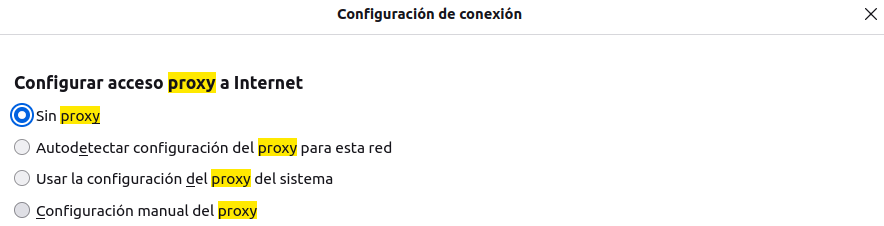
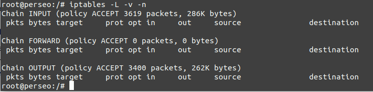

5.1 Proxy transparente para HTTP
1. Introducción
Uno de los inconvenientes del uso de los proxies tal como se ha visto hasta ahora, es que se deben configurar todos los clientes. Lo que con un número razonable de ordenadores, automatizar la configuración no debería ser muy complicado, la cosa se complica cuando, a demás de incrementarse el número de equipos, también existe una gran variedad de programas, sistemas operativos y plataformas. El caso extremo sería un escenario donde la presencia de dispositivos móviles que se usaran tanto en la empresa como fuera de ella, fuera generalizada.
2. Escenario
Se parte del escenario final del capítulo 2.1 Implementación de un proxy caché con Squid3 en Ubuntu Server, es decir, la sección de permisos de accesos del fichero squid.conf es el siguiente:
http_access allow localnet
http_access allow localhost
El esquema es el siguiente:

Figura 1. Esquema de red - Proxy Squid en ubuntu server con Mikrotik.
3. Configuración del firewall de MikroTiK
En primer lugar, se configura el firewall del router MikroTik BackEnd para que marque todos los paquetes que quieran atravesarlo y cuyo puerto destino sea el puerto 80 (http). Hay que tener en cuenta que no hay que marcar los paquetes que vengan del propio servidor proxy. A continuación se describe el proceso a seguir.
1. Firewall - Mangle
En primer lugar hay que acceder a IP --> Firewall --> Mangle para añadir una regla que marque con la etiqueta "proxy-http" todos los paquetes HTTP de la red interna que no vengan del servidor proxy antes que que sean enrutados. Más tarde, esta etiqueta será usada para determinar la entrada de la tabla de enrutamiento a aplicar. Los parámetros a configurar son:
- Chain: prerouting
- Src. Address: !192.168.2.254 (que no provengan del servidor proxy).
- Protocol: tcp.
- Dst. Port: 80.
- In. Interface: ether2 (interfaz de la red interna).
- Action: mark routing.
- New Packet Mark: to-proxy.
2. Configuración del enrutado de MikroTik
Cada paquete marcado con la etiqueta "proxy-http" deberá ser enrutado hacia el servidor proxy. Para ello, hay que añadir una nueva entrada en la tabla de encaminamiento de manera que envíe al servidor proxy squid todos los paquetes marcados con la etiqueta "proxy-http". Las acciones a realizar son las siguientes:
1. Acceder a IP > Routes > Routes.
2. Añadir una nueva entrada en la tabla de encaminamiento, donde los parámetros a configurar son:
- Dst. Address: 0.0.0.0/0
- Gateway: 192.168.2.254.
- Routing Mark: to-proxy.
- Comment: Enrutado paquetes marcados con to-proxy.
4. Configuración de Squid/iptables en Ubuntu Server
En este apartado, hay que trabajar en el servidor proxy Squid. En primer lugar, hay que añadir un puerto extra para que gestione el tráfico interceptado de manera transparente (etiqueta proxy-http). El proceso es el siguiente:
1. Editar el fichero squid.conf
Si se busca la ayuda de la directiva TAG: http_port, se tiene una descripción de los distintos modos de funcionamiento que tiene. Es importante conocer los distintos modos para aplicar el necesario en el escenario actual.
2. Añadir directiva http_port (interceptar tráfico etiquetado)
Hay que localizar la directiva http_port para añadir debajo de ella otra del mismo tipo, pero esta vez usando un puerto distinto, ejemplo, el 3126 e indicando que trabajará en el modo intercept.
Es obligatorio mantener un puerto de escucha para las peticiones no interceptadas, así que si no se quiere ofrecer este servicio, hay que usar el cortafuegos del sistema GNU/Linux para impedir que le lleguen peticiones.
3. Configuración del cortafuegos de Ubuntu Server
En estos momentos, Squid esté escuchando el puerto 8080 a la espera de paquetes interceptados, pero los paquetes que el router Back-End está enviando tienen como puerto destino el 80, así que es necesario añadir una regla en iptables en la tabla nat para que un paquete HTTP que venga por el interfaz físico del servidor antes de que sea enrutado se reenvíe al puerto 3126 del mismo.
root@perseo:/#iptables -t nat -A PREROUTING -i enp0s3 -p tcp --dport 80 -j REDIRECT --to-port 3126
Si se comprueba iptables, se observa que se ha añadido la regla correctamente:
root@perseo:/#iptables -t nat -L
5. Configuración de los clientes y pruebas
Una vez configurado el proxy transparente, ya no será necesario configurar el proxy en los navegadores de los equipos de la red, sino que simplemente, se dejará la configuración por defecto en el apartado del Proxy del navegador.

Si se accede a un servidor web mediante http, se observa que se puede acceder sin problemas.
Si se accede a IP > Firewall > Mangle, se observar que se tiene tráfico (Bytes/Paquetes) por lo que se están etiquetando los paquetes que provienen de los equipos de la red interna a excepción del servidor proxy, en este caso, del equipo Ubuntu Desktop 20.04 que es el utilizado para realizar las pruebas.
Para comprobar el tráfico que está redirigiendo iptables, se ejecuta el siguiente comando:
root@perseo:/#iptables -L -v -n

6. Referencias
Obra publicada con Licencia Creative Commons Reconocimiento No comercial Compartir igual 4.0